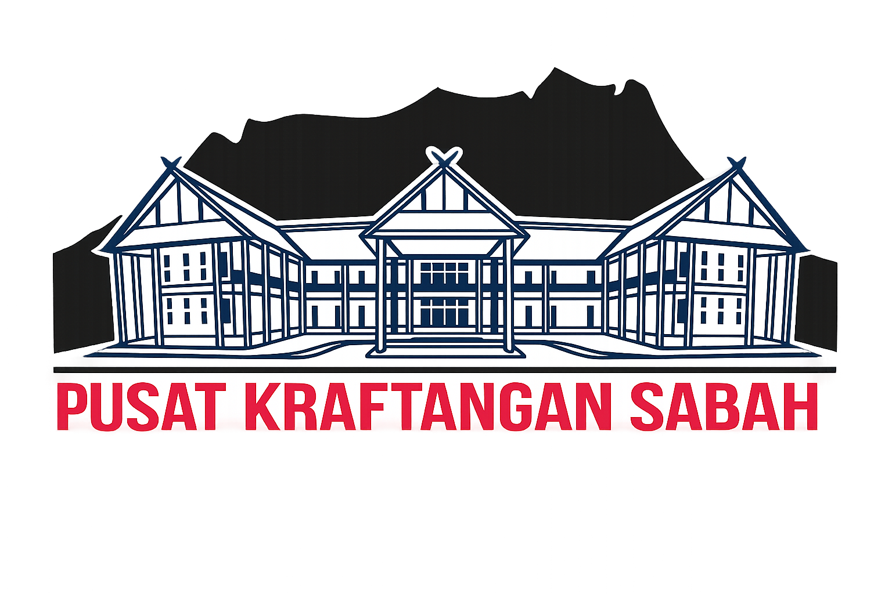
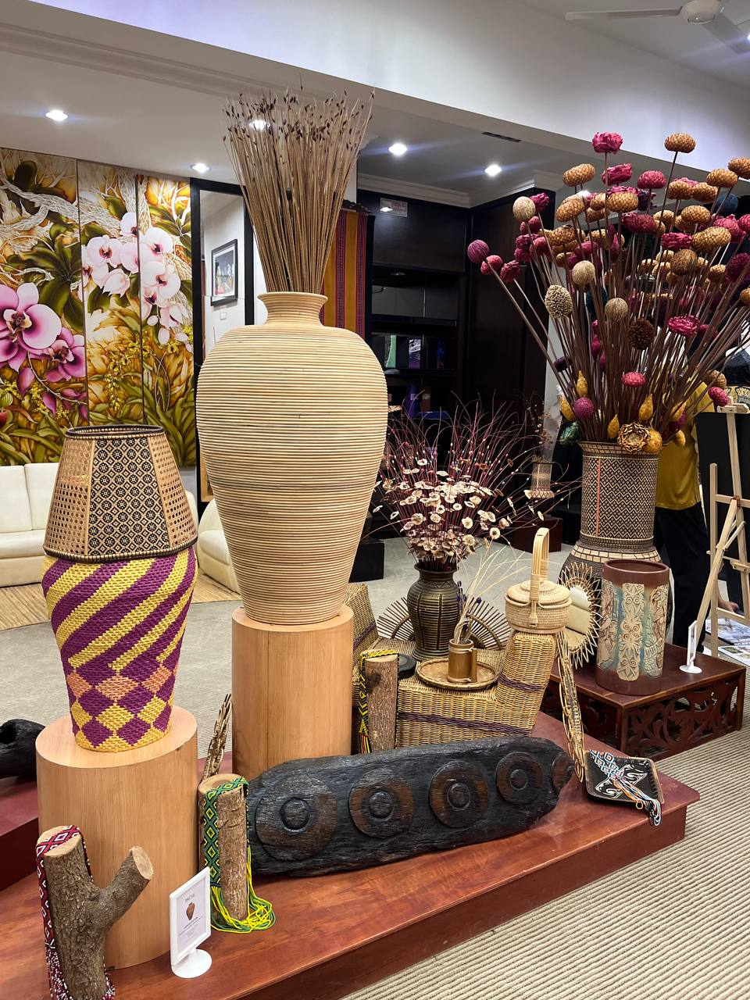
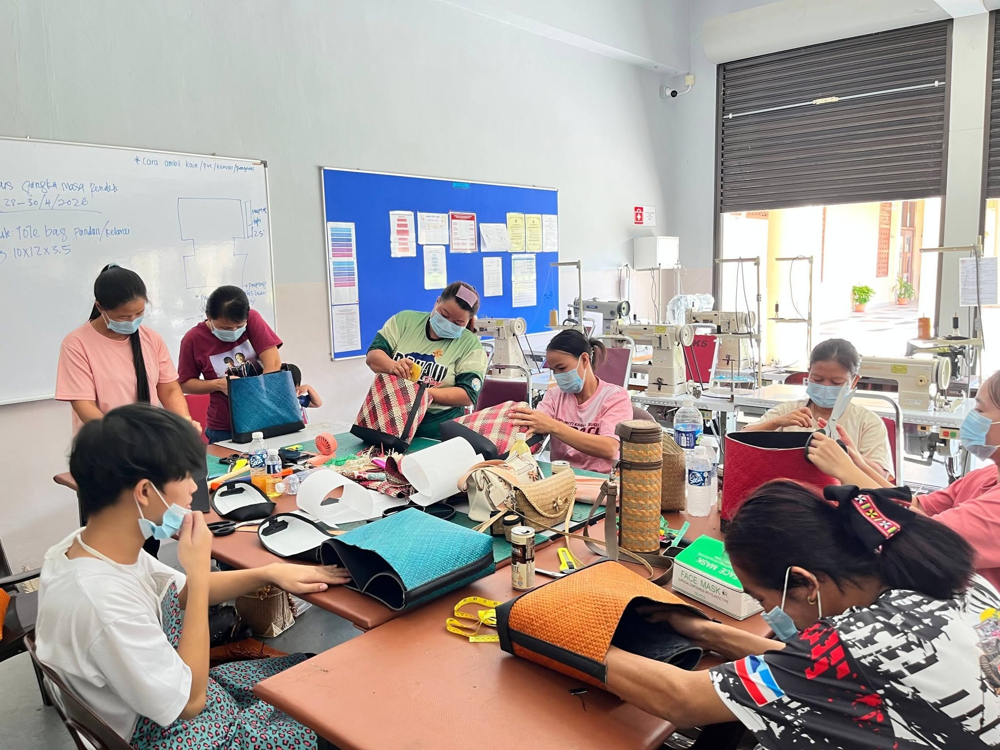
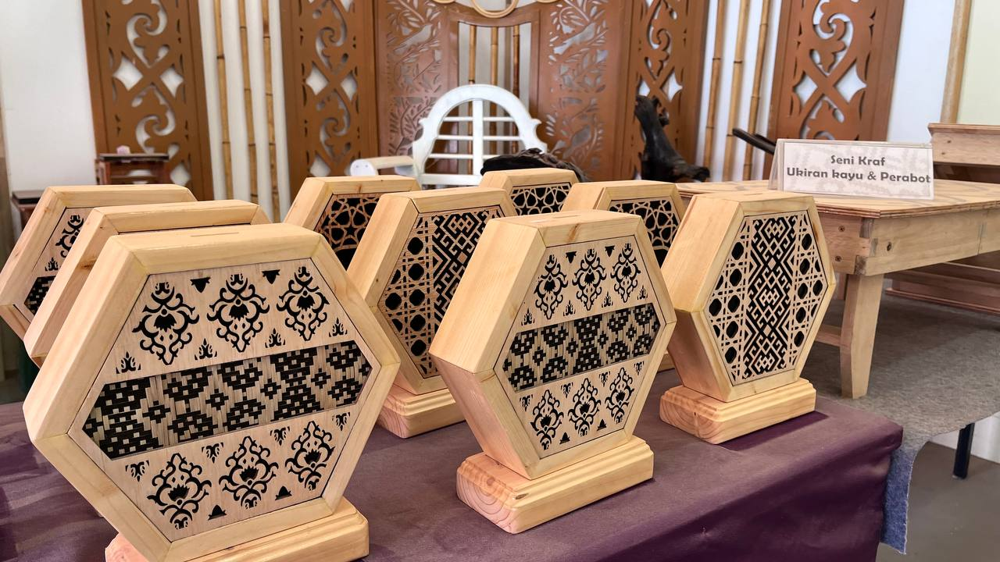

Expertly crafted traditional items including batik, rattan, bamboo crafts, ceramics and textiles created by skilled Sabahan artisans.

Visitors and communities can learn traditional craft-making skills through hands-on workshops such as weaving and batik painting.

Our exhibitions and galleries celebrate Sabah’s rich cultural heritage while promoting appreciation for local craftsmanship.
Our gallery serves as a living museum showcasing the evolution of Sabahan crafts from traditional tribal motifs to modern creative interpretations.
Every handmade item reflects the artisan’s dedication and mastery, preserving cultural knowledge that has been passed down through generations.
Each craft piece carries its own uniqueness, celebrating natural materials and the artistic expression of Sabah’s local communities.